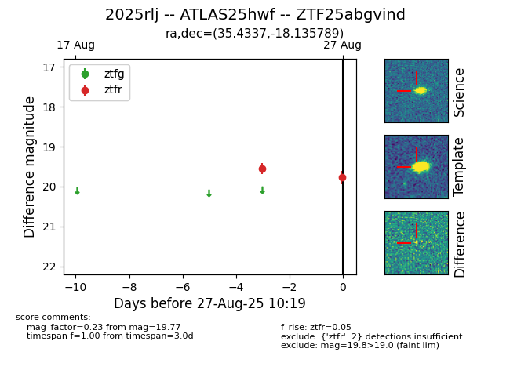

Target 2025rlj at 2025-08-27 10:19, see:
FINK: fink-portal.org/ZTF25abgvind
Lasair: lasair-ztf.lsst.ac.uk/objects/ZTF25abgvind
ALeRCE: alerce.online/object/ZTF25abgvind
TNS: wis-tns.org/object/2025rlj
YSE: ziggy.ucolick.org/yse/transient_detail/2025rlj
alt names
ZTF25abgvind (ztf,fink)
2025rlj (tns,yse)
ATLAS25hwf (atlas)
coordinates:
equatorial (ra, dec) = (35.4337,-18.13579)
galactic (l, b) = (194.2851,-67.35498)
photometry
last ztfr=19.77
2 ztfr detections
